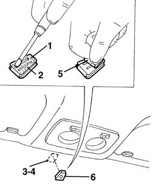

7065C69 interior rear view mirror plate - r r
- Path
- Procedures > 70 FITTINGS > 7065 SEAT BELTS AND ACCESSORIES > 7065C accessories and decorations > 7065C69 interior rear view mirror plate - r r
- Kind
- repair procedure (removal / refitting; the operation number is the code)
- Applies to
- all engines; all production periods
- Interactive page
- https://sloeber94.github.io/elrnDB-a156/en/#/3238990
Applies to: all engines; all production periods
 Removing
Removing
 Refitting
RefittingThe following procedure shows plate reattachment since it is not possible to detach plate from glass if it has been properly fixed.
Applies to: all engines; all production periods
Refitting
Removing1. Remove any adhesive residuals from plate.
2. Properly degrease surface where plate and glass mate by using waste paper and heptane.
3. Take any adhesive residuals off windshield glass.
4. Properly degrease surface where glass and plate mate by using waste paper and heptane.
5. Apply on plate both sides adhesive tape according to its length.
 | Type | Component | Name | Qty. |
|---|---|---|---|---|
5 | Double-sided tape | REAR VIEW MIRROR PLATE TO WINDCCREEN | 3M 4265 FASSON 450/460, DUPLOMONT 910 F LOHMANN | - |
6. Heat plate at a temperature of 40-50 ° C and place it on windshield glass, then put it under a pressure of about 5 Kg/cm 2 wait for plate cooling at a room temperature.
Rear view mirror must not be submitted to stress during the following 24 hours to prevent glueing from being jeopardized.
